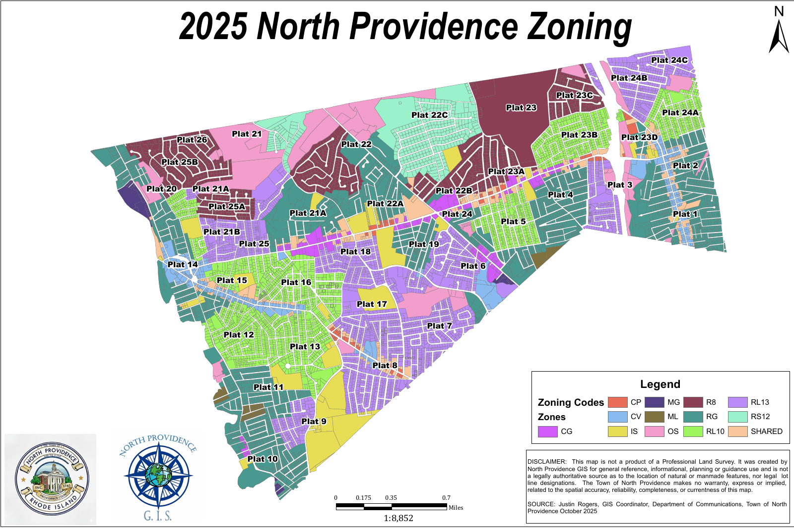

Local draft RI
NORTH PROVIDENCE, RHODE ISLAND
North Providence zoning
Maps, ordinances and document changes.
MAPS
North Providence maps

Open original map ↗Reference map only. District selection below filters the amendment table; it does not locate a property.
SELECTED DISTRICT
MGManufacturing General
Selected use rules.
Every rule has a paper trail.
Read the signed amendment and the council vote behind this update.
The latest change, explained.
Original wording, adopted updates, and the record behind them.
Cannabis retail added to the district use table
A new use row, a definition, and special-use standards. Adopted February 3, 2026.
Loading the original ordinance and checked amendments…
1 verified use
CHECKED LOCAL AMENDMENT ROWS
District use rules
| Use | R12 | R8 | RL | RG | IS | CP | CV | CG | ML | MG | OS |
|---|
Y PermittedS Special-use permitN Prohibited
APPLICATION CONTEXT
A use code is the first step.
The amendment also contains special-use standards across two pages. Open the original to review the complete criteria.
Read both pages of the amendment ↗HOUSING COVERAGE
Housing rules are still in review.
Multifamily, ADUs, parking, and dimensional rules have not been reconciled against the full amendment history. They are not presented here as current.
Open the review queue →NEW · DOCUMENT COMPARISON
Compare the full document
View original wording, removals and additions.
Open ordinance document →Cannabis retailer · new use-table entry
ORIGINAL ORDINANCE §203(H)
∅
No explicit cannabis row
The base PDF contains no explicit cannabis or marijuana row. An absent row does not establish a previous N, Y, or S classification.
ADOPTED AMENDMENT Page 1
+27. Cannabis retailer
+
Medical and recreational retail
MGSSpecial-use permit required
All other listed districtsNProhibited in this row
+
Associated definition and special-use criteria added.
+ Added content− Removed contentThis verified example adds a row. There is no deleted row to color red.
ADOPTION TRAIL
Three dates. A clear record.
- February 3, 2026Adopted by Town Council; minutes item 5.
- February 5, 2026Mayoral approval date on the signed PDF.
- Effectiveness clauseThe ordinance says it takes effect upon adoption. Both dates remain visible for review.
REVIEW NOTE
A citation mismatch, surfaced.
The amendment heading refers to Article 8 for definitions. Its operative section 2 identifies Article XIII. The tool preserves that discrepancy for a reviewer.
Full exact-text consolidation has not been completed.
TRY THE COMPARISON
See every addition and removal.
Paste two versions of a section to compare their words. This is a text comparison; it does not determine whether an amendment is legally adopted.
Runs in your browser. Text is not uploaded.
AFTER THE DECEMBER 2014 BASELINE
Amendments since 2014
Loading the amendment register…
Adoption dates, not index years · latest first
No records match these filters.
THE EVIDENCE LIBRARY
Source documents
Official ordinance scans, annual books and council adoption records.
No sources match your search.
MAKE UNCERTAINTY VISIBLE
Some records need a second look.
These items are outside the verified district rules. An agenda, a proposal, or a partial history does not establish the current ordinance.
Adoption unverified
Mixed-use commercial corridor overlay
The October 6, 2026 agenda lists introduction of ordinance 26-015Z. The August record uses a different number and continues discussion. Locate the final adopted text and resolve the identifier.
Read the October agenda ↗History incomplete
Housing rules and other amendments
Reconcile ADUs, multifamily, parking, dimensions, the flood-hazard amendment, and other changes against the complete amendment record and applicable state law.
Explore ClerkBase records ↗Crosswalk required
Section numbers and property boundaries
The town PDF uses §203; ClerkBase uses §35-39 for the district use table. Match these versions and reconcile later map changes before assigning rules to an address.
Open the town map library ↗